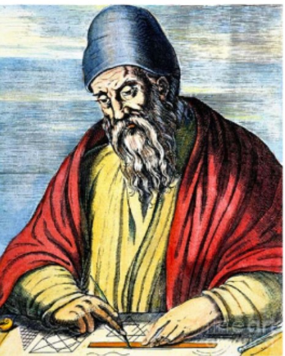
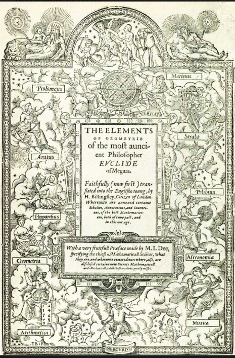
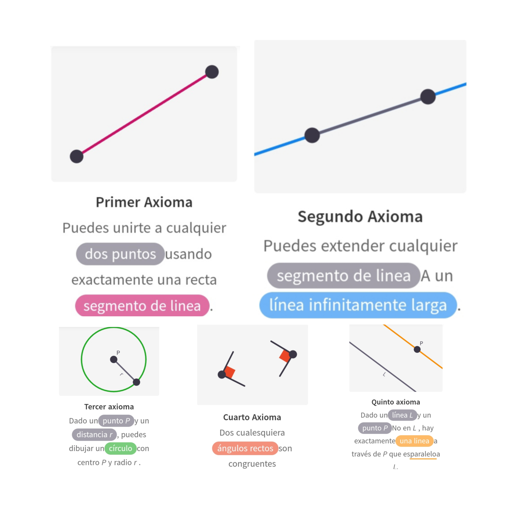
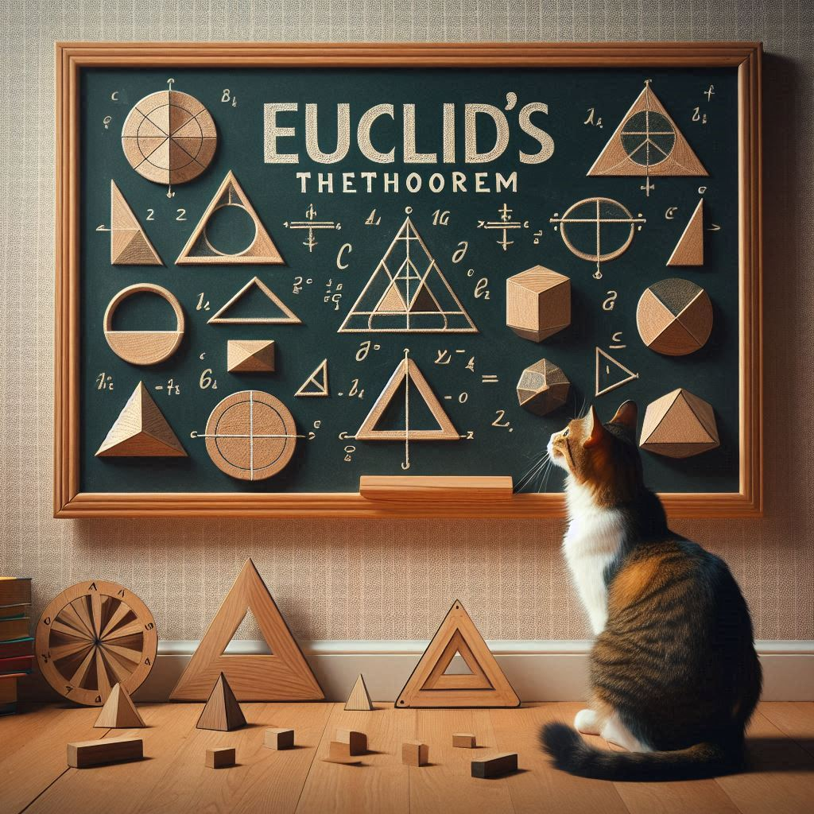
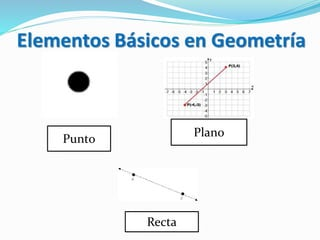

Euclides de Alejandría
Descubre la vida y los aportes del legendario matemático Euclides, cuya obra marcó el inicio de la geometría como disciplina científica
-
Nacimiento
Euclides nació alrededor del año 325 a.C. en la ciudad de Alejandría, Egipto.
Learn More -
Estudios
Euclides recibió una educación exhaustiva en matemáticas, astronomía y filosofía en la Escuela de Alejandría.
Learn More -
Enseñanza
Después de sus estudios, Euclides se convirtió en maestro y director de la Escuela de Alejandría, donde enseñó a generaciones de estudiantes.
 Learn More
Learn More
-
Publicación Elementos
Euclides recopiló los conocimientos geométricos de su época en una obra fundamental llamada "Elementos"
 Learn More -
Axiomas y Postulados
Estableció un sistema axiomático para la geometría, sentando las bases de una estructura lógica y deductiva.
 Learn More -
Teoremas
A partir de los axiomas, Euclides demostró una gran cantidad de teoremas geométricos.
 Learn More -
Geometría Euclidiana
Euclides estableció definiciones claras de conceptos geométricos fundamentales como punto, línea, ángulo y plano
 Learn More -
Fundador de la Geometría en 2 dimensiones
Euclides sentó las bases de la geometría como una disciplina científica.
 Learn More
Learn More